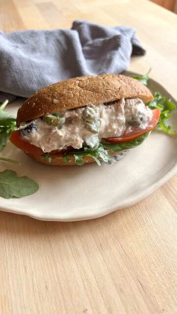
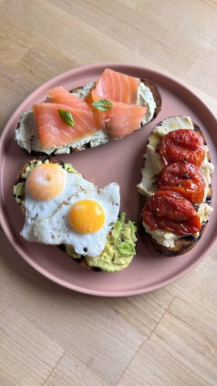
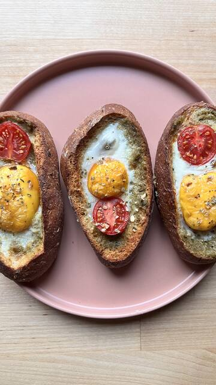
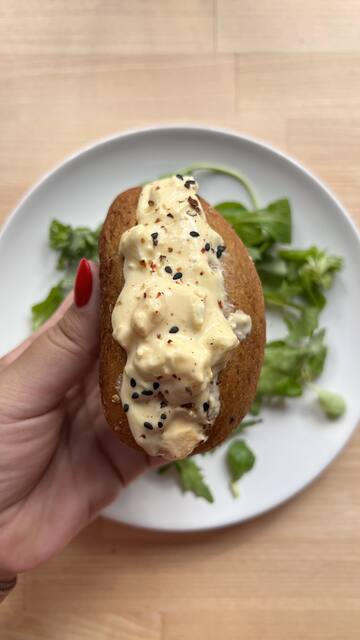
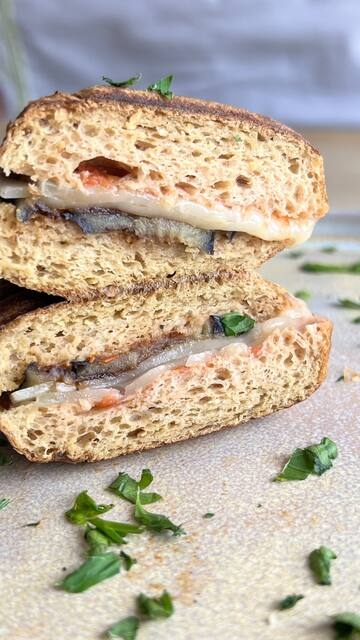
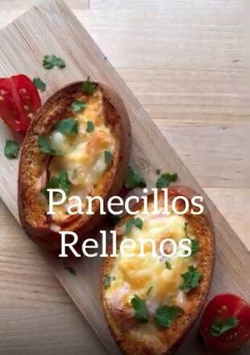
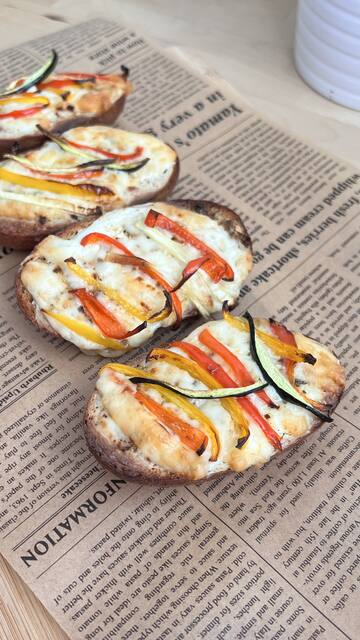
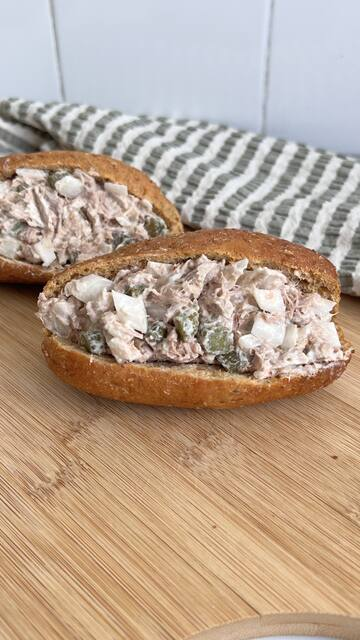

Original
Original

Panini Low Carb High Protein: 7 panini da 50 g con 29 g di proteine e 8,2 g di fibre ogni 100 g.
Panini Low Carb High Protein: 7 panini da 50 g con 29 g di proteine e 8,2 g di fibre ogni 100 g. La loro dimensione è perfetta per panini imbottiti, hamburger fatti in casa o per accompagnare i pasti. Preparati con una miscela di proteine di frumento, soia e lupino, sono un modo semplice per aggiungere proteine a qualsiasi pasto della giornata.
Miscela di proteine (35%) (proteine del grano, proteine di soia, proteine di lupino), farina di soia, farina di frumento, farina integrale di frumento, semola di soia, crusca di soia, zucchero, fibra di avena, sale, emulsionante: lecitina di girasole; correttore di acidità: diacetato di sodio; conservante: propionato di calcio; carbonato di calcio; lievito inattivo.
| Valori medi | Per 100 g |
|---|---|
| Energia | 1024 kJ / 244 kcal |
| Grassi | 6,6 g |
| di cui acidi grassi saturi | 1,0 g |
| Carboidrati | 13 g |
| di cui zuccheri | 3,8 g |
| Fibre | 8,2 g |
| Proteine | 29 g |
| Sale | 1,2 g |
I valori nutrizionali sono soggetti alle variazioni tipiche dei prodotti naturali.

VideoCon Panini proteici
Con Panini proteici
VideoCon Panini proteici
Con Panini proteici
Con Panini proteici
Con Panini proteici
VideoCon Panini proteici
Con Panini proteiciOriginal

 Low Carb
Low Carb

 Low Carb
Low Carb

 Low Carb
Low Carb
Il nostro negozio online è in spagnolo. Se ti trovi in un altro Paese, o sei un distributore o un marchio interessato al private label, scrivici e ti risponderemo in italiano.